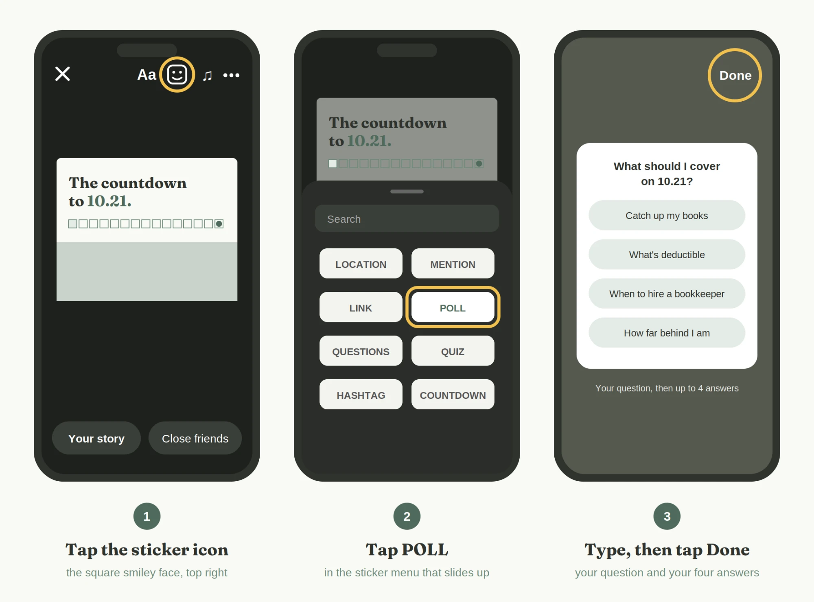
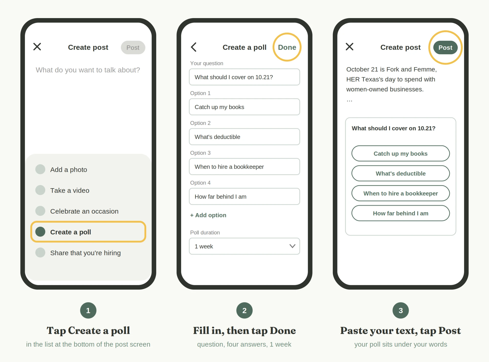

Faculty Portal · Private
Week 2 Kit · The Countdown to 10.21
Post: anytime this week, Tuesday, October 6 through Sunday, October 11
What you'll post: your countdown Story with a poll, a LinkedIn poll, and (if you'd like) a Facebook post. You don't need to film anything.
Time it takes: about 20 minutes the first time, and less after that.
October 21 is Fork and Femme, HER Texas's day to spend with women-owned businesses. This week, you're asking your network one question: What should I cover on 10.21? Their answers help shape your class, and your post reminds them the day is coming.
If anything on your screen looks different from these steps, don't worry. The apps change their look often. Take a screenshot of what you see and text it to Erika, and she'll walk you through it.
Before you start
You'll need three things on your phone:
- The Instagram app and the LinkedIn app, signed in to your account. Facebook is optional.
- Your Story picture. It's the cream one with your photo, the countdown squares, and your web address at the bottom. Tap the Download button under it. On an iPhone, if the picture opens on its own page instead of downloading, press and hold your finger on it, then tap Save to Photos. On Android, press and hold, then tap Download image. It will now be in your phone's photos.
- Your link. This is your personal web address. It's listed with your name in the next section, and it's printed at the bottom of your Story picture. It ends in ?ref= and your name, which is how your seats are counted for the $500 challenge. Anyone who taps it, or types it exactly, gets counted as yours.
Your poll and your class
Everyone asks the same question (except Joshlyn, below). Your four answers are about your class. Your class name goes wherever a caption says [your class].
What should I cover on 10.21?
Step 1: Put your link in your Instagram bio
Your bio is the short description at the top of your Instagram profile. Putting your link there means anyone who visits your profile can tap it.
- Open Instagram and tap your profile picture in the bottom right corner.
- Tap Edit profile.
- Tap Links, then Add external link.
- Paste your link in the URL box. In the Title box, type Fork, Femme & Foundations.
- Tap Done or the check mark in the top right corner.
Step 2: Post your countdown Story with your poll
A Story is a picture that shows at the top of your followers' screens for 24 hours. A poll sticker is a small box you add on top that lets people vote with one tap.

- Open Instagram. On the home screen, tap your profile picture in the top left corner (it has a small + on it). The camera opens.
- In the bottom left corner, tap the small square showing your latest photo. Your photos open. Tap your Story picture, the one with your photo.
- Tap the sticker icon. It's the square smiley face along the top of the screen.
- Tap POLL in the menu that slides up.
- Type the question, What should I cover on 10.21?, where it says Ask a question.
- Tap the first answer box and type your first answer. Do the same for the second. Tap Add option to get boxes for your third and fourth answers.
- Tap Done in the top right corner.
- Press and hold the poll with one finger and drag it onto the green band. That band is the poll's spot. If the poll hangs over the edges, pinch it with two fingers to shrink it a little. Don't make it much smaller, or the answers get hard to read and tap.
Now add your link to the same Story:
- Tap the sticker icon again, and this time tap LINK.
- In the URL box, paste your link, the same web address printed on your picture. Then tap Customize sticker text and type Get your seat. Tap Done.
Why both? People can tap the sticker, and anyone who screenshots your Story can still type the address they see on the picture. Either way, the seat counts as yours.
- Drag the link sticker to the empty space to the right of Save your seat, just below the green band.
- Tag kiln and Kayla. Tap the sticker icon once more and tap MENTION. Type kiln.co and tap Kiln (@kiln.co) when it appears in the list. Then do it again: sticker icon, MENTION, type justkaylap, and tap Kayla P. Nimer (@justkaylap). Drag both tags to an empty spot where they don't cover your photo or the poll. Pinch them smaller if you need room.
Why? kiln is hosting us on October 21, and Kayla has offered to help spread the word. When you tag them, they get a notice and can share your Story with their followers.
- In the bottom left corner, tap Your story. It's live.
Seeing your votes, and saving them before they disappear
Your Story disappears after 24 hours, and so do your results. Save them before then.
- On the Instagram home screen, tap your profile picture in the top left corner to open your Story.
- Swipe up on the screen, or tap Activity at the bottom. You'll see how many people chose each answer.
- Take a screenshot. On an iPhone, press the side button and the volume-up button at the same time. On Android, press the power button and the volume-down button at the same time. The screenshot saves to your photos.
Step 3: Run your poll on LinkedIn
On LinkedIn, the poll stays up for a full week and sits right under your post. LinkedIn polls don't use a picture, so you won't need your Story picture here.

- Open LinkedIn and tap Post (the + at the bottom of the screen).
- A list of choices appears at the bottom. If you only see a row of small icons, tap the + or the three dots to see the full list. Tap Create a poll.
- In Your question, type What should I cover on 10.21?
- Type your first answer in Option 1 and your second in Option 2. Tap + Add option twice to add your third and fourth answers.
- Tap Poll duration and choose 1 week.
- Tap Done in the top right corner.
- You're back on the post screen with your poll underneath. Tap the space above the poll where it says What do you want to talk about? and paste the LinkedIn post text below. Replace [your class] and [your link].
- Tag kiln and Kayla. In your post, delete [@Kiln] and type @Kiln in its place. As you type, a list pops up; tap Kiln, the coworking company. Then delete [@Kayla Nimer] and type @Kayla Nimer; tap Kayla Nimer in the list (check the photo so you pick the right Kayla). Each name turns blue when the tag worked. Tags have to be typed and picked from the list; pasted text won't tag anyone.
Why? kiln is hosting us on October 21, and Kayla has offered to help spread the word. When you tag them, they get a notice and can share your post with their network.
- Paste the hashtags at the end.
- Tap Post in the top right corner.
LinkedIn post text
October 21 is Fork and Femme, HER Texas's day to spend with women-owned businesses. I'm teaching [your class] that day at Fork, Femme & Foundations, in Dallas at [@Kiln] Preston Hollow, and live on Zoom. Before I finalize what I cover, I want to hear from you. Vote below, and I'll share what comes back. Save your seat, or buy one and gift one at 25% off: [your link] Thank you to [@Kayla Nimer] for helping spread the word.
Hashtags (keep it to three): #ForkAndFemme #WomenOwnedBusiness #HERTexas
Seeing your votes
Tap your profile picture, then View profile, then scroll down to Activity and tap your poll. You'll see the percentages for each answer. Take a screenshot the same way as above.
Step 4 (optional): Facebook
Facebook doesn't have a poll for personal pages, so this post asks people to answer in the comments.
- Open Facebook and tap What's on your mind? at the top of the screen.
- Paste the Facebook caption below and fill in the brackets.
- Tap Photo/video and choose your Story picture.
- Tap Post.
Facebook caption
October 21 is Fork and Femme, HER Texas's day to spend with women-owned businesses, and I'm teaching [your class] at Fork, Femme & Foundations. In Dallas at Kiln Preston Hollow, and live on Zoom. Help me plan: what's the one [your class] question you'd want answered that day? Tell me in the comments. A class costs as low as $99, or buy one and gift one at 25% off: [your link]
Hashtags (keep it to three): #ForkAndFemme #BuyFromHer #WomenOwnedBusiness
Last step: Send Erika your results
By Sunday, October 11, text Erika your screenshots from Instagram and LinkedIn. Your results become next week's post, so you'll have content without having to write any.
No code needed. Bundle and buy-one-gift-one prices apply automatically.
Want a version without a photo? Download the general Story. If something looks wrong — a price, a date, a class that's changed — tell Erika before you post rather than editing it yourself. hello@quintaand.co